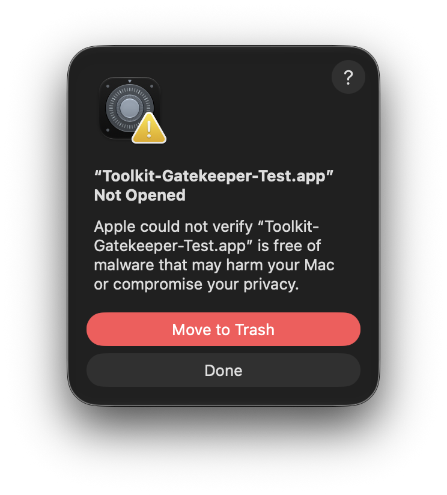
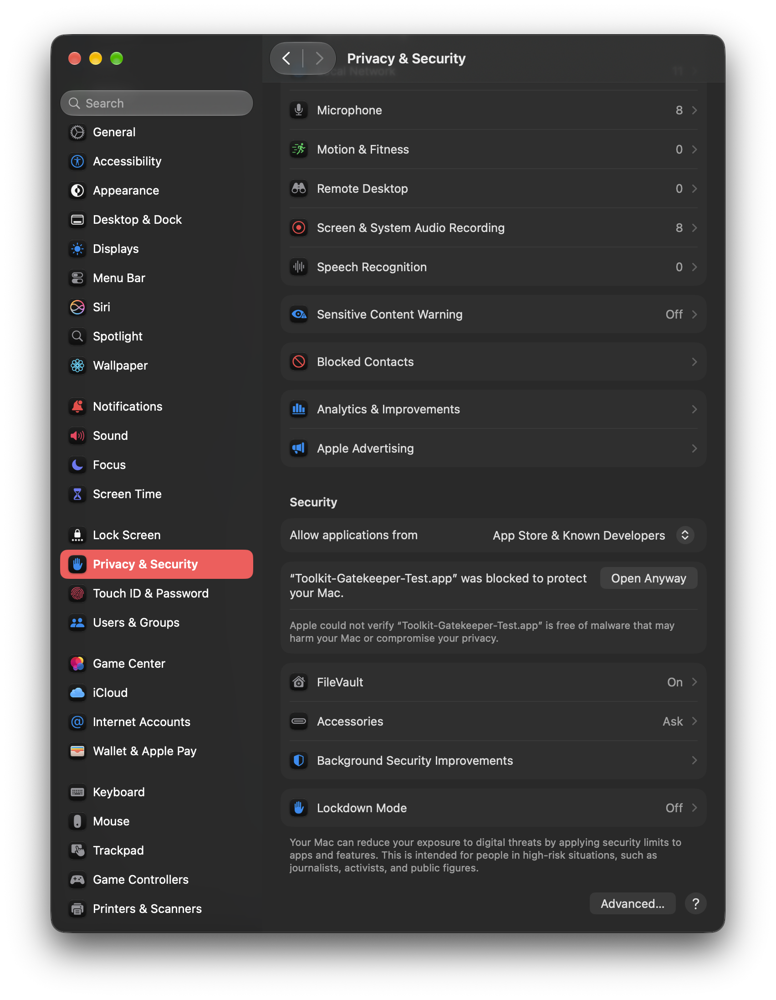
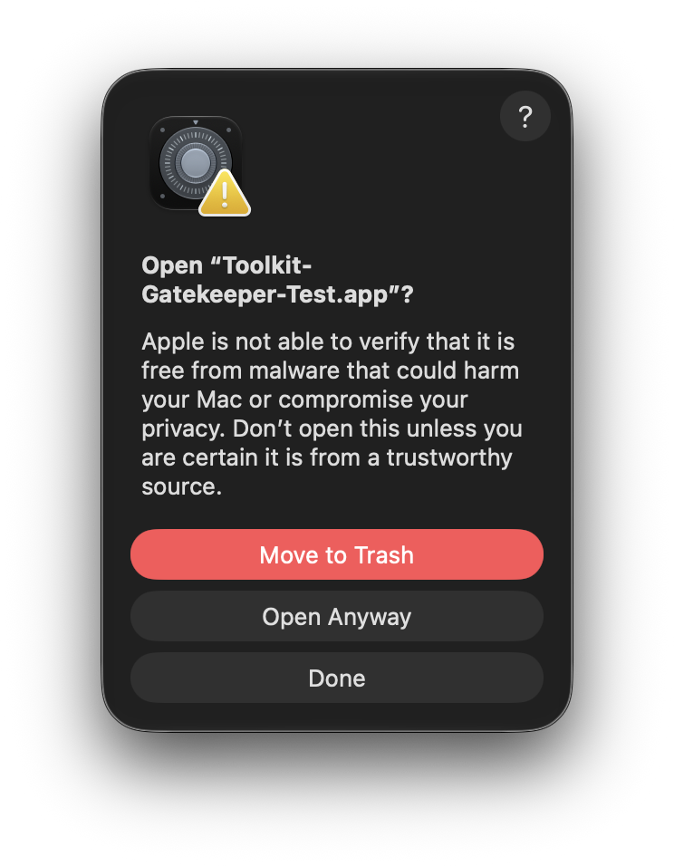
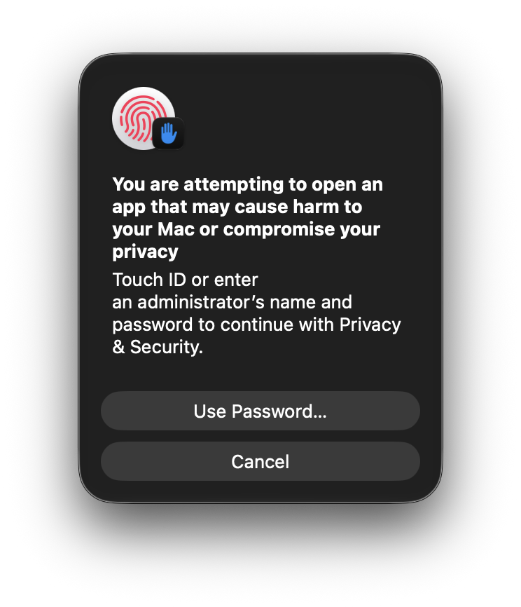
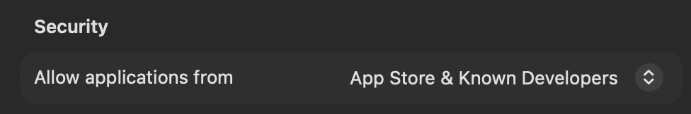

1
Open Toolkit and choose Done
On the first launch, macOS may show the developer verification message. Close it with Done.

Toolkit is distributed outside the Mac App Store. macOS may ask you to confirm the first launch. The process is built into macOS and takes less than a minute.
On the first launch, macOS may show the developer verification message. Close it with Done.

Open System Settings, choose Privacy & Security, then scroll down. You will find the blocked Toolkit notice there.

Press Open Anyway next to the Toolkit message.

macOS will ask for your administrator password. Enter it to approve this application.

In the same Privacy & Security page, the recommended option is App Store & Known Developers.
